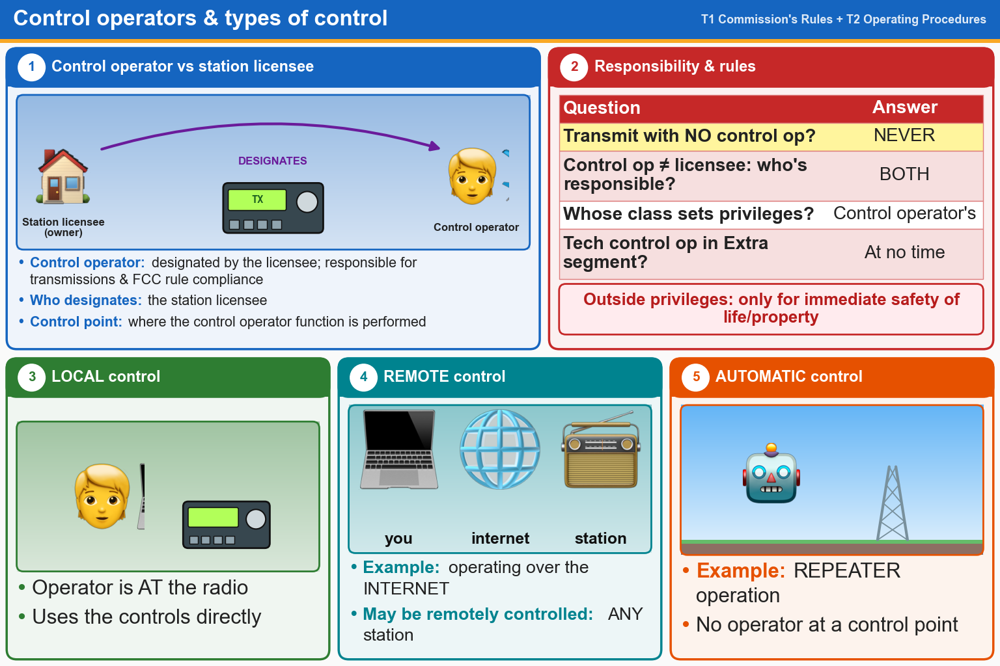

💡 Every transmitting station needs a control operator. Repeater = automatic, internet = remote.
Pick an answer for each question, then press Grade at the bottom.
T1E11[97.3(a)(13)]
What is a control operator as defined in Part 97?
✔A.An amateur operator designated by the licensee of a station to be responsible for transmissions and FCC rules compliance at that station
✘B.The person who is the licensee of an amateur station
✘C.An amateur operator identified in the FCC database as responsible for transmissions and FCC rules compliance at a station license location
✘D.The person speaking or otherwise communicating messages over an amateur station
T1E03[97.103(b)]
Who must designate the station control operator?
✘A.Any licensed operator
✘B.The FCC
✘C.The frequency coordinator
✔D.The station licensee
T1E05[97.3(a)(14)]
What is an amateur station’s control point?
✘A.The location of the station’s transmitting antenna
✔B.The location at which the control operator function is performed
✘C.The mailing address of the station licensee
✘D.The location of the station’s transmitting apparatus
T1E01[97.7(a)]
When may an amateur station transmit without a control operator?
✔A.Never
✘B.When the transmitting station is an auxiliary station
✘C.When the station licensee is away and another licensed amateur is using the station
✘D.When using automatic control, such as in the case of a repeater
T1E07[97.103(a)]
When the control operator is not the station licensee, who is responsible for the proper operation of the station?
✘A.All licensed amateurs who are present at the operation
✘B.Only the control operator
✔C.The control operator and the station licensee
✘D.Only the station licensee
T1E04[97.103(b)]
What determines the transmitting frequency privileges of an amateur station?
✘A.The frequencies printed on the license grant
✘B.The highest class of operator license held by anyone on the premises
✘C.The frequency authorized by the frequency coordinator
✔D.The class of operator license held by the control operator
T1E06[97.301]
When, other than during an emergency, may a Technician class licensee be the control operator of a station operating in an Amateur Extra Class band segment?
✘A.When using a club station whose trustee holds an Amateur Extra Class license
✘B.As part of a multi-operator contest team
✔C.At no time
✘D.When designated as the control operator by an Amateur Extra Class licensee
T2C09
Are amateur station control operators ever permitted to operate outside the frequency privileges of their license class?
✘A.Yes, but only when part of a RACES emergency plan
✔B.Yes, but only in situations involving the immediate safety of human life or protection of property
✘C.Yes, but only when part of a FEMA emergency plan
✘D.No
T1E08[97.3(a)(6), 97.205(d)]
Which of the following is an example of automatic control?
✘A.Controlling a station over the internet
✔B.Repeater operation
✘C.Using a computer or other device to send CW automatically
✘D.Using a computer or other device to identify automatically
T1E09[97.109(c)]
Which amateur stations may be remotely controlled?
✘A.Only digital stations
✔B.Any station
✘C.Only repeater stations
✘D.Only automatically controlled stations
T1E10[97.3(a)(39)]
Which of the following is an example of remote control as defined in Part 97?
✘A.Earth-Moon-Earth (EME) communication
✘B.Controlling a model aircraft, boat, or car by amateur radio
✔C.Operating the station over the internet
✘D.A software defined radio (SDR)